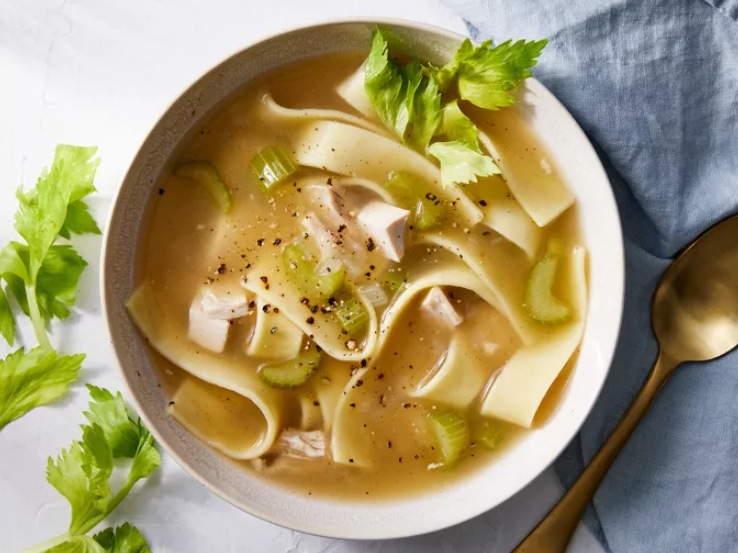

Recipe 2 - Noodle Soup!

- 2 ½ cups all-purpose flour
- 1 pinch salt
- 2 large eggs, beaten
- ½ cup milk
- 1 tablespoon butter
Steps:
- Gather the ingredients.
- Bring a large pot of lightly salted water to a boil. Add egg noodles and oil, and boil until noodles are
tender, about 8 minutes. Drain, rinse under cool running water, and drain again.
- Bring broth, salt, and poultry seasoning to a boil in a Dutch oven. Stir in celery and onion; reduce the
heat, cover, and simmer until vegetables have softened, about 15 minutes.
- Mix cornstarch and water together in a small bowl until cornstarch is completely dissolved; gradually stir
into soup. Stir in noodles and chicken, and cook until heated through, 2 to 3 minutes.
- Serve hot and enjoy!
The Noodle Soup recipe
Home